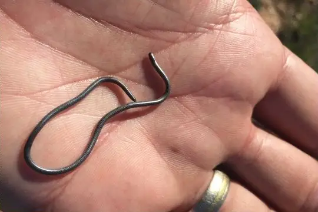

Namibiana
The genus Namibiana (family Leptotyphlopidae) has 5 species in SnakeList (none venomous), recorded in 3 countries.
- 5species
- 5non-venomous
- 3countries
Species
Showing 5 species
- No photo yetBenguela Worm SnakeNamibiana latifrons
- No photo yetBocage's Blind SnakeNamibiana rostrata
 Damara Thread SnakeNamibiana labialis
Damara Thread SnakeNamibiana labialis
Slender Thread SnakeNamibiana gracilior Western Thread SnakeNamibiana occidentalis
Western Thread SnakeNamibiana occidentalis
No snakes in Namibiana match.
About the genus Namibiana
- Family: Leptotyphlopidae.
- Recorded in: Angola, Namibia, South Africa.